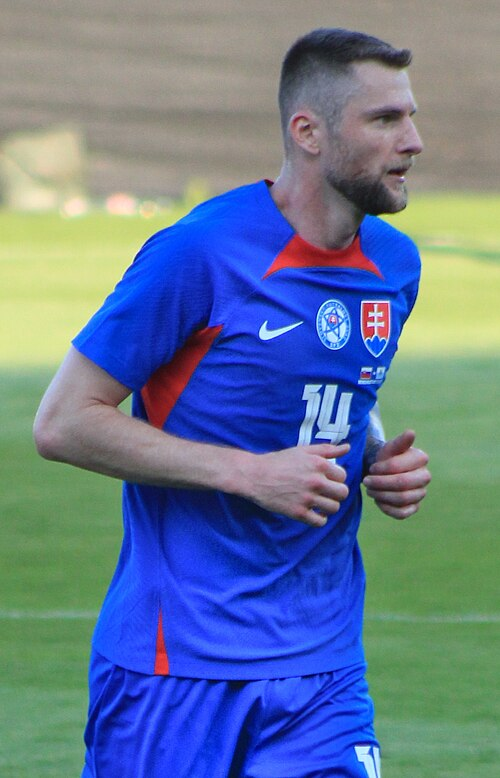

Fenerbahçe Istanbul Portfolio
Current roster, squad value, top assets, U23 assets, honours, and market risk.
Squad Market Score78.5
Squad ARES Score79.5
Average Age28.1
Transfer RiskMedium

Fenerbahçe Istanbul
Super Lig | Turkey | Europe
Top AssetAhmet Murat Emanetoğlu
U23 Assets9
Honours Rows30
ConfidenceHigh
Roster source: Fenerbahçe Istanbul | Checked 2026-05-24
Market Score vs Age
Squad portfolio shape by age and market score.
X-axis: Player ageY-axis: Market Score
ARESMarketTrendConfidence
How to read: Each point shows how squad age relates to market value.
Position Strength
GK, CB, FB, CM, W, CF portfolio balance.
X-axis: Position groupY-axis: Squad strength
ARESMarketTrendConfidence
How to read: Bars compare strength across the main football position groups.
Current Player Roster
| Player | Age | Position | Minutes / Role | ARES | Market | Tier | Trend | Confidence |
|---|---|---|---|---|---|---|---|---|
| AMEFBFenerbahçe IstanbulAhmet Murat Emanetoğlu | 32 | FB | 1652 estimated minutes / current squad | 67.6 | 89.6 | Core Starter | Rising | Medium |
 Emre Mor Emre Mor | 28 | W | 2570 estimated minutes / Projected starter | 86.7 | 87.3 | Blue-Chip Asset | Flat | High |
| GTFBFenerbahçe IstanbulGürhan Taşkaya | 27 | FB | 1736 estimated minutes / current squad | 71.1 | 86.7 | Core Starter | Stable | Medium |
| TSFBFenerbahçe IstanbulTaner Sönmezer | 23 | FB | 2736 estimated minutes / current squad | 84.0 | 86.6 | Rising Asset | Rising | Medium |
| OVFBFenerbahçe IstanbulOzan Vural | 25 | FB | 893 estimated minutes / current squad | 69.8 | 86.6 | Core Starter | Stable | Medium |
| İAFBFenerbahçe Istanbulİlker Alkun | 21 | FB | 2149 estimated minutes / current squad | 80.9 | 85.9 | Rising Asset | Stable | Medium |
| MSFBFenerbahçe IstanbulMurat Salar | 27 | FB | 2015 estimated minutes / current squad | 66.6 | 84.8 | Core Starter | Stable | Medium |
| ODFBFenerbahçe IstanbulOrhan Demirel | 22 | FB | 1400 estimated minutes / current squad | 78.5 | 83.3 | Rising Asset | Rising | Medium |
| BGFBFenerbahçe IstanbulBurçin Gözlüklü | 32 | FB | 1334 estimated minutes / current squad | 85.3 | 83.0 | Core Starter | Stable | Medium |
 Marco Asensio Marco Asensio | 30 | FW | 1268 estimated minutes / Rotation / role player | 83.3 | 82.4 | Blue-Chip Asset | Falling | High |
 Talisca Talisca | 32 | MF | 1414 estimated minutes / Rotation / role player | 86.3 | 81.8 | Rising Asset | Rising | High |
 Jhon Durán Jhon Durán | 22 | FW | 2731 estimated minutes / Projected starter | 81.4 | 81.6 | Rising Asset | Rising | High |
| AKFBFenerbahçe IstanbulAdem Köz | 33 | FB | 1706 estimated minutes / current squad | 87.7 | 81.2 | Core Starter | Stable | Medium |
 Nélson Semedo Nélson Semedo | 32 | DF | 1873 estimated minutes / Rotation / role player | 86.3 | 80.5 | Rising Asset | Rising | High |
 Çağlar Söyüncü Çağlar Söyüncü | 30 | DF | 2326 estimated minutes / Projected starter | 84.5 | 80.5 | Rising Asset | Flat | High |
 Ederson Santana de Moraes Ederson Santana de Moraes | 32 | GK | 1262 estimated minutes / Rotation / role player | 86.8 | 80.3 | Rising Asset | Falling | High |
| CCFBFenerbahçe IstanbulCem Ciritci | 22 | FB | 930 estimated minutes / current squad | 89.7 | 79.6 | Rising Asset | Stable | Medium |
| ETFBFenerbahçe IstanbulErtan Torunoğulları | 31 | FB | 849 estimated minutes / current squad | 84.5 | 78.4 | Core Starter | Rising | Medium |
 Milan Škriniar | 31 | DF | 1067 estimated minutes / Rotation / role player | 82.4 | 78.1 | Rising Asset | Rising | High |
 Fred Fred | 33 | MF | 1167 estimated minutes / Rotation / role player | 82.7 | 77.7 | Rising Asset | Rising | High |
| İAFBFenerbahçe Istanbulİlker Arslan | 28 | FB | 2558 estimated minutes / current squad | 79.5 | 76.3 | Core Starter | Stable | Medium |
 Edson Álvarez Edson Álvarez | 28 | DF | 1504 estimated minutes / Rotation / role player | 79.3 | 76.2 | Rising Asset | Flat | High |
 Mert Hakan Yandaş Mert Hakan Yandaş | 31 | MF | 654 estimated minutes / Rotation / role player | 79.2 | 75.8 | Core Starter | Rising | High |
| UŞFBFenerbahçe IstanbulUfuk Şansal | 32 | FB | 1757 estimated minutes / current squad | 75.7 | 75.7 | Core Starter | Stable | Medium |
 Caner Erkin Caner Erkin | 37 | W | 2458 estimated minutes / Projected starter | 80.1 | 75.2 | Core Starter | Rising | High |
| ZYUFBFenerbahçe IstanbulZeynep Yalım Uzun | 27 | FB | 2786 estimated minutes / current squad | 88.7 | 75.1 | Core Starter | Rising | Medium |
| ODFBFenerbahçe IstanbulOlcay Doğan | 32 | FB | 852 estimated minutes / current squad | 85.0 | 73.2 | Core Starter | Rising | Medium |
| AGFBFenerbahçe IstanbulAli Gürbüz | 19 | FB | 1543 estimated minutes / current squad | 67.0 | 72.9 | Rising Asset | Stable | Medium |
| OOFBFenerbahçe IstanbulOrkan Orakçıoğlu | 32 | FB | 2164 estimated minutes / current squad | 72.3 | 72.9 | Core Starter | Stable | Medium |
| ESFBFenerbahçe IstanbulErdem Sezer | 20 | FB | 1553 estimated minutes / current squad | 70.2 | 71.9 | Rising Asset | Stable | Medium |
| EEEFBFenerbahçe IstanbulErtuğrul Eren Ergen | 24 | FB | 695 estimated minutes / current squad | 80.9 | 71.8 | Core Starter | Stable | Medium |
 N'Golo Kanté N'Golo Kanté | 35 | MF | 3002 estimated minutes / Projected starter | 77.6 | 70.9 | Core Starter | Falling | High |
| SSFBFenerbahçe IstanbulSadettin Saran | 18 | FB | 728 estimated minutes / current squad | 82.3 | 69.8 | Rising Asset | Stable | Medium |
| İYFBFenerbahçe Istanbulİlyas Yılmaz | 23 | FB | 3037 estimated minutes / current squad | 67.1 | 67.1 | Rising Asset | Stable | Medium |
| SYFBFenerbahçe IstanbulSerhan Yılmaz | 34 | FB | 2533 estimated minutes / current squad | 72.8 | 66.6 | Core Starter | Stable | Medium |
U23 Assets
| Player | Age | Position | Market | Reason |
|---|---|---|---|---|
| TSFBFenerbahçe IstanbulTaner Sönmezer | 23 | FB | 86.6 | Current club roster row parsed from Wikipedia. |
| İAFBFenerbahçe Istanbulİlker Alkun | 21 | FB | 85.9 | Current club roster row parsed from Wikipedia. |
| ODFBFenerbahçe IstanbulOrhan Demirel | 22 | FB | 83.3 | Current club roster row parsed from Wikipedia. |
| Jhon Durán | 22 | FW | 81.6 | Upside FW profile with Super Lig context, 2731 beta-estimated minutes, and licensed Commons photo coverage. |
| CCFBFenerbahçe IstanbulCem Ciritci | 22 | FB | 79.6 | Current club roster row parsed from Wikipedia. |
| AGFBFenerbahçe IstanbulAli Gürbüz | 19 | FB | 72.9 | Current club roster row parsed from Wikipedia. |
| ESFBFenerbahçe IstanbulErdem Sezer | 20 | FB | 71.9 | Current club roster row parsed from Wikipedia. |
| SSFBFenerbahçe IstanbulSadettin Saran | 18 | FB | 69.8 | Current club roster row parsed from Wikipedia. |
| İYFBFenerbahçe Istanbulİlyas Yılmaz | 23 | FB | 67.1 | Current club roster row parsed from Wikipedia. |
Club Honours And Trophies
| Competition | Type | Count | Years | Source |
|---|---|---|---|---|
| Sport Competition Result Year | Team honour | 1 | https://en.wikipedia.org/wiki/Fenerbah%C3%A7e_S.K. | |
| Men's football Balkans Cup Winners 1968 | Team honour | 1 | 1968 | https://en.wikipedia.org/wiki/Fenerbah%C3%A7e_S.K. |
| Women's boxing European Champions Cup Runners | Team honour | 1 | 1999 | https://en.wikipedia.org/wiki/Fenerbah%C3%A7e_S.K. |
| Women's basketball EuroCup Women Runners | Team honour | 1 | 2004 | https://en.wikipedia.org/wiki/Fenerbah%C3%A7e_S.K. |
| Men's table tennis ETTU Cup Runners | Team honour | 1 | 2007 | https://en.wikipedia.org/wiki/Fenerbah%C3%A7e_S.K. |
| Men's volleyball Balkan Cup Winners 2009 | Team honour | 1 | 2009 | https://en.wikipedia.org/wiki/Fenerbah%C3%A7e_S.K. |
| Women's volleyball CEV Women's Champions League Runners | Team honour | 1 | 2009 | https://en.wikipedia.org/wiki/Fenerbah%C3%A7e_S.K. |
| Women's volleyball FIVB Volleyball Women's Club World Championship Winners 2010 | Team honour | 1 | 2010 | https://en.wikipedia.org/wiki/Fenerbah%C3%A7e_S.K. |
| Women's volleyball CEV Women's Champions League Winners 2011 | Team honour | 1 | 2011 | https://en.wikipedia.org/wiki/Fenerbah%C3%A7e_S.K. |
| Women's table tennis ETTU Cup Winners 2011 | Team honour | 1 | 2011 | https://en.wikipedia.org/wiki/Fenerbah%C3%A7e_S.K. |
| Women's table tennis ETTU Cup Winners 2012 | Team honour | 1 | 2012 | https://en.wikipedia.org/wiki/Fenerbah%C3%A7e_S.K. |
| Women's volleyball Women's CEV Cup Runners | Team honour | 1 | 2012 | https://en.wikipedia.org/wiki/Fenerbah%C3%A7e_S.K. |
| Women's basketball EuroLeague Women Runners | Team honour | 1 | 2012 | https://en.wikipedia.org/wiki/Fenerbah%C3%A7e_S.K. |
| Women's basketball EuroLeague Women Runners | Team honour | 1 | 2013 | https://en.wikipedia.org/wiki/Fenerbah%C3%A7e_S.K. |
| Men's volleyball Balkan Cup Winners 2013 | Team honour | 1 | 2013 | https://en.wikipedia.org/wiki/Fenerbah%C3%A7e_S.K. |
| Men's volleyball CEV Challenge Cup Winners 2013 | Team honour | 1 | 2013 | https://en.wikipedia.org/wiki/Fenerbah%C3%A7e_S.K. |
| Women's volleyball Women's CEV Cup Winners 2013 | Team honour | 1 | 2013 | https://en.wikipedia.org/wiki/Fenerbah%C3%A7e_S.K. |
| Women's table tennis European Champions League Runners | Team honour | 1 | 2013 | https://en.wikipedia.org/wiki/Fenerbah%C3%A7e_S.K. |
Transfer Needs
| Need | Position | Reason | Priority | Suggested Profile |
|---|---|---|---|---|
| Role security and U23 depth | Depth risk review | Squad portfolio balance uses ARES score, market score, age curve, and roster coverage. | Medium | Current roster players sorted by Market Score |